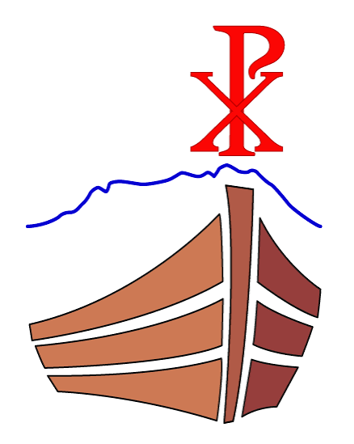

You’re offline
There’s no internet connection right now. Mass times, events and your registrations will be back as soon as you’re connected.
Archdiocese of Kota Kinabalu
There’s no internet connection right now. Mass times, events and your registrations will be back as soon as you’re connected.
Archdiocese of Kota Kinabalu